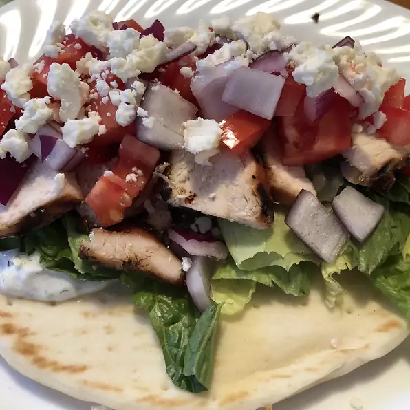

Chicken Souvlaki Gyro Style

Ingredients
Marmalade
- ¾ cup balsamic vinaigrette salad dressing
- 3 tablespoons lemon juice
- 1 tablespoon dried oregano
- ½ teaspoon freshly ground black pepper
- 4 skinless, boneless chicken breast halves
Tzatziki Sauce (cucumber sauce) and Gyro
- ½ cup seeded, shredded cucumber
- 1 teaspoon kosher salt
- 1 cup plain yogurt
- ¼ cup sour cream
- 1 tablespoon lemon juice
- ½ tablespoon rice vinegar
- 1 teaspoon olive oil
- 1 clove garlic, minced
- 1 tablespoon chopped fresh dill
- ½ teaspoon Greek seasoning
- kosher salt to taste
- freshly ground black pepper to taste
- 4 large pita bread rounds
- 1 heart of romaine lettuce, cut into 1/4 inch slices
- 1 red onion, thinly sliced
- 1 tomato, halved and sliced
- ½ cup kalamata olives
- ½ cup pepperoncini
- 1 cup crumbled feta cheese
Steps
- PIn a small bowl, mix the balsamic vinaigrette, juice from 1/2 lemon, oregano, and 1/2 teaspoon black pepper.
Place chicken in a large resealable plastic bag. Pour marinade over the chicken, seal, and refrigerate for at least 1 hour.
- Preheat an outdoor grill for high heat.
- Toss the shredded cucumber with 1 teaspoon kosher salt, and allow to sit at least 5 minutes.
In a medium bowl, mix the yogurt, sour cream, 1 tablespoon lemon juice, rice vinegar, and olive oil.
Season with garlic, fresh dill, and Greek seasoning. Squeeze the cucumber to remove any excess water; stir into sauce.
Season to taste with kosher salt and pepper. Refrigerate until ready to use.
- Remove chicken from marinade and place on prepared grill.
Discard remaining marinade. Cook chicken until juices run clear, about 8 minutes on each side.
Remove chicken from heat, and allow to sit about 10 minutes before slicing into thin strips.
- Place pita rounds on the grill, and cook for about 2 minutes, until warm, turning frequently to avoid burning.
Arrange warmed pita, sliced chicken, lettuce, onion, tomato, olives, and pepperoncini on a serving platter.
Serve tzatziki sauce and feta cheese in separate bowls on the side. Stuff pita pockets with chicken and toppings to serve.
Odin Recipes